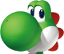

Yoshi
A dinosaur that helps out when he feels like it. Sometimes Yoshi is available to help and other times he is busy. No one knows what he is doing the rest of the time, especially when he doesn't show up for entire games. He eats everything in sight and freaks out when he is contacted. Mario keeps him around because he saved Mario when he was a baby.